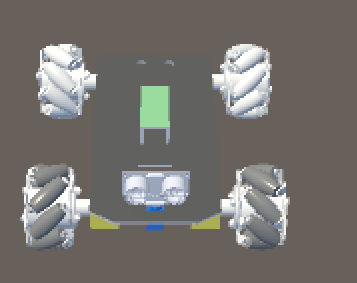
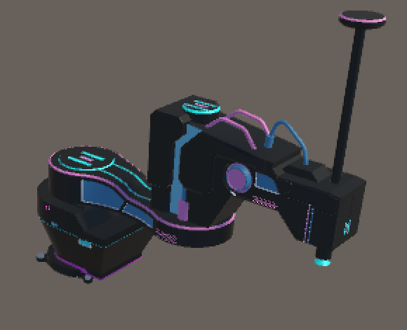
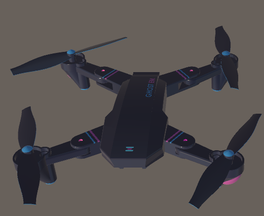

Ecosistema STEM físico + AR
Robótica educativa con realidad aumentada para aprender, jugar y competir.
MEERA KIDS integra robots físicos modulares, experiencias virtuales en realidad aumentada y retos gamificados para acercar la tecnología a niñas y niños de 8 a 12 años desde la escuela, el hogar y espacios comunitarios.
Robots modulares
Retos STEM
Competencias nacionales e internacionales
Aprendizaje activo
Los estudiantes interactúan con robots listos para usar y dedican más tiempo a experimentar y resolver retos.
Modelo híbrido
La versión física y la versión en realidad aumentada amplían el acceso incluso cuando no hay un robot disponible.
Impacto social
Por cada kit adquirido, se puede ampliar el acceso a experiencias tecnológicas en escuelas con recursos limitados.


Un catálogo diseñado para experiencias inmersivas
Cada producto se integra con actividades de realidad aumentada, retos guiados y dinámicas de competencia.
Móvil
Modular
Realidad aumentada
Omni Rover AR
Plataforma omnidireccional de cuatro ruedas preparada para retos de desplazamiento, precisión y competencias gamificadas.
Ideal para iniciar
Ver detalle
Manipulación
Laboratorio
AR guiada
SCARA Motion AR
Brazo robótico orientado a secuencias, coordinación y automatización con visualización aumentada paso a paso.
Para retos de control
Ver detalle
Vuelo
Trayectorias
Misión AR
Aero Mission AR
Dron educativo para actividades de navegación, retos de trayectorias y experiencias inmersivas con misiones virtuales.
Aprendizaje dinámico
Ver detalle
¿Qué hace diferente a MEERA KIDS?
La propuesta combina hardware educativo, experiencias digitales y acceso a competencias para fortalecer vocaciones STEM.
Robots listos para usar
La arquitectura modular reduce la complejidad inicial y permite concentrar el tiempo en la interacción, la programación y la resolución de retos.
Formato físico y en AR
Las experiencias pueden continuar en realidad aumentada cuando el robot físico no está disponible, ampliando el acceso y la continuidad del aprendizaje.
Competencias con propósito
El ecosistema conecta a niñas y niños con desafíos tecnológicos compartidos y con la experiencia motivadora de competir a distintas escalas.
Modelo del ecosistema
La propuesta comercial se estructura en tres niveles que combinan acceso digital, producto físico modular y una comunidad activa alrededor de retos y competencias STEM.
Acceso digital escalable
El robot en realidad aumentada funciona como puerta de entrada al ecosistema. Permite que niñas y niños participen en retos y competencias STEM desde casa o la escuela sin necesidad de adquirir inicialmente un robot físico.
Producto físico modular
El robot móvil omnidireccional modular constituye el producto principal. A través de módulos intercambiables para fútbol robótico, básquet robótico o circuitos de carrera, la experiencia puede crecer en juego, aprendizaje y programación.
Comunidad y competencias
Las competencias STEM virtuales y presenciales complementan la experiencia. Allí los participantes ponen a prueba sus habilidades, conviven con otros estudiantes y se integran a una comunidad que favorece permanencia e ingresos recurrentes.
Formas de vivir la experiencia
MEERA KIDS ofrece distintas maneras de integrarse al ecosistema según la etapa, el tipo de usuario y el objetivo de aprendizaje.
- Robot físico omnidireccional para experiencias prácticas de robótica.
- Módulos intercambiables para fútbol, básquet y circuitos de carrera.
- Acceso al robot en realidad aumentada para comenzar desde casa o la escuela.
- Inscripción a competencias STEM virtuales y presenciales.
- Membresías para dar continuidad a retos, actividades y beneficios del ecosistema.
- Paquetes educativos para escuelas, academias y programas formativos.
Una propuesta que crece contigo
La experiencia está diseñada para que cada familia, escuela u organización pueda empezar de forma accesible y ampliar el nivel de participación con el tiempo. Primero se puede explorar el formato digital, después incorporar el robot físico modular y finalmente sumarse a competencias y actividades compartidas con otros estudiantes.
Ideal para clientes potenciales:
Este enfoque combina producto físico, acceso digital y experiencias educativas para ofrecer una propuesta flexible, atractiva y escalable para distintos contextos de implementación.
Edad objetivo del ecosistema, con actividades diseñadas para aprendizaje progresivo.
Dos formatos complementarios para ampliar cobertura, continuidad y accesibilidad.
Dinámicas inspiradas en juego, deporte, automatización y exploración tecnológica.
Modelo escalable orientado a reducir la brecha digital en contextos con menos recursos.
Cómo funciona la experiencia
Las familias, escuelas y programas educativos pueden integrar robots físicos y actividades en realidad aumentada dentro de talleres, clases y competencias. El estudiante puede operar el robot, resolver retos guiados, personalizar módulos y avanzar hacia la lógica de programación básica.
- Retos individuales o en equipo.
- Uso en escuela, hogar o espacios públicos.
- Actividades presenciales y virtuales.
- Diseño modular para múltiples dinámicas.
Clientes y usuarios
La propuesta está pensada para familias, escuelas, academias, programas extracurriculares y organizaciones educativas que buscan impulsar habilidades de lógica, creatividad, resolución de problemas y trabajo colaborativo desde edades tempranas.
Un ecosistema para aprender tecnología con propósito.
Explora el catálogo, revisa la propuesta de realidad aumentada y adapta el sitio a tu canal de venta o demostración.